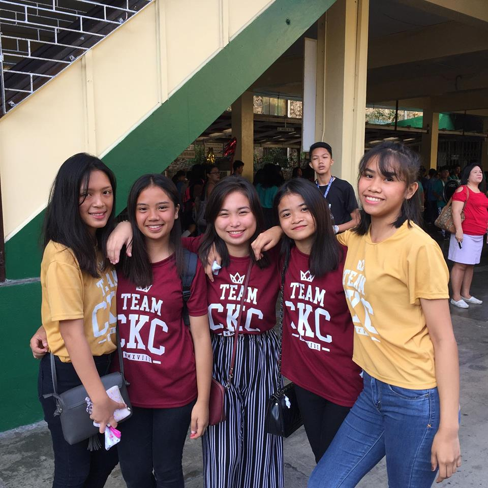

VETILOGS

Vetilogs is a Filipino girl group formed in Christ the King College.
Vetilogs debuted on 2015 with originally 7 members- Kim, Chay, Kath, Evi, Shanti, Rocial and Polina.
A year after debuting, Rocian left Vetilogs because she transfered school.
Two Years after debut, Shanti left Vetilogs because of change of group.
Vetilogs is currently consists of Kim, Chay, Kath, Evi and Polina.
They are currently in the 10th grade and will be graduating soon.
Fandom Name: Loglogs
Fan Color: Dark Red